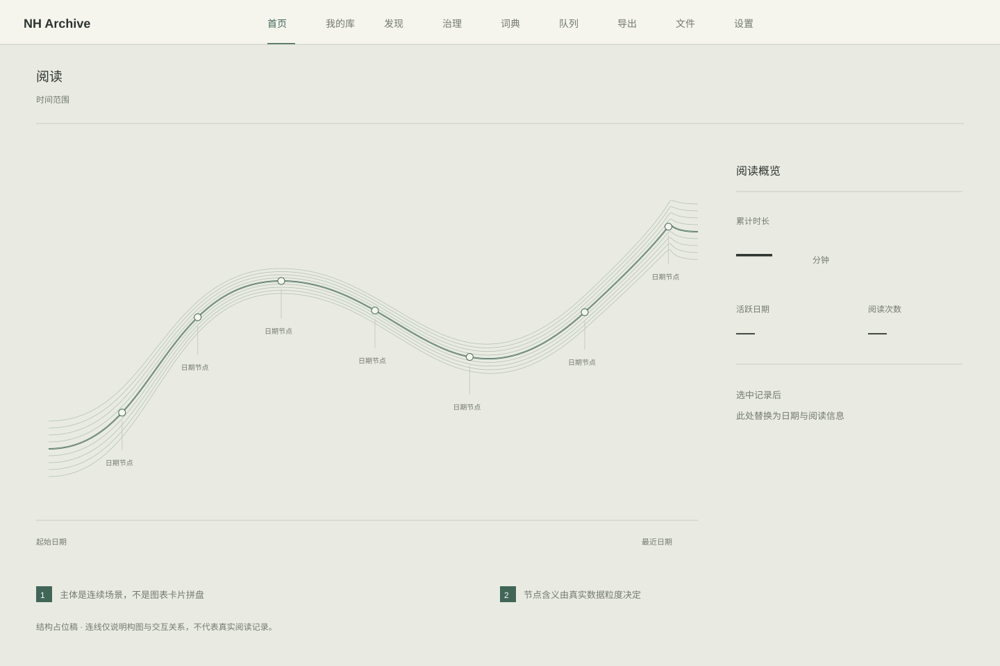
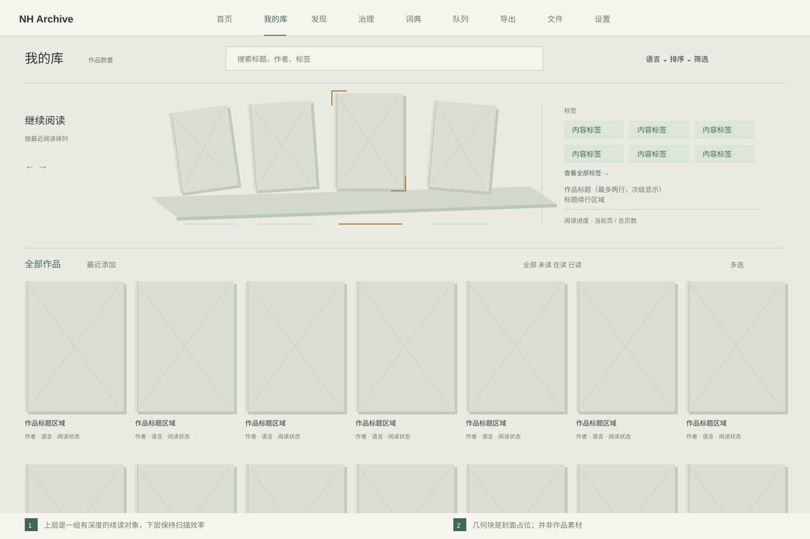
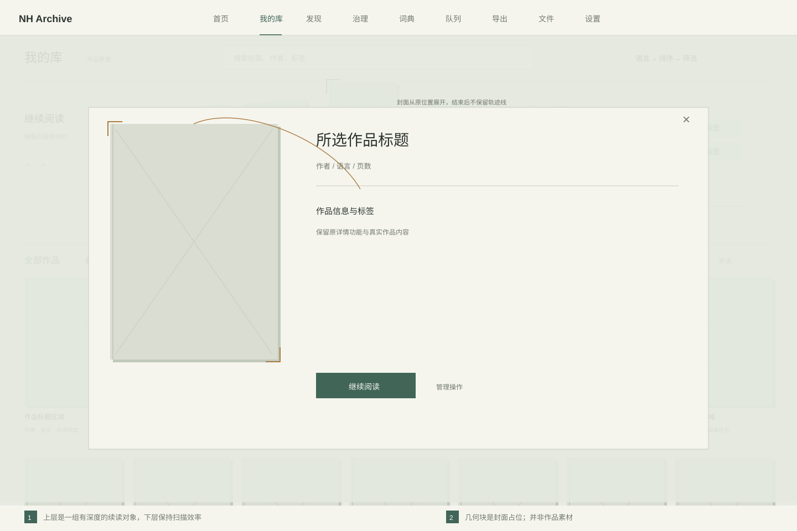
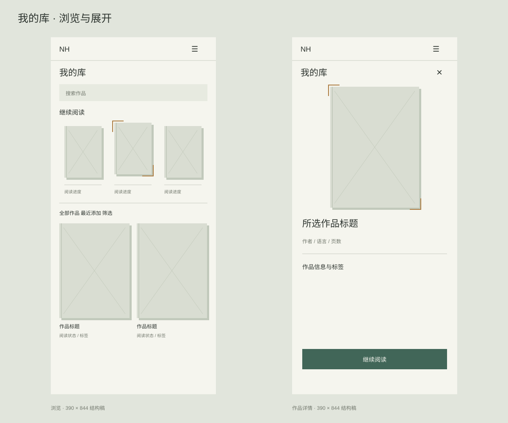
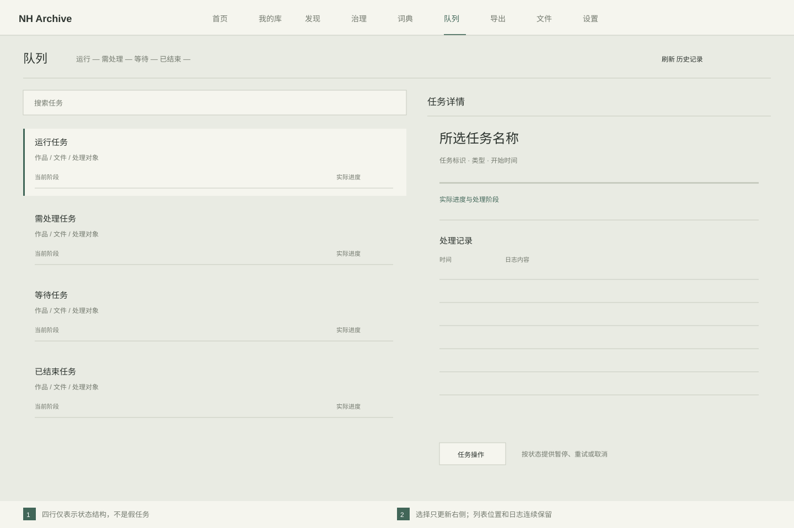
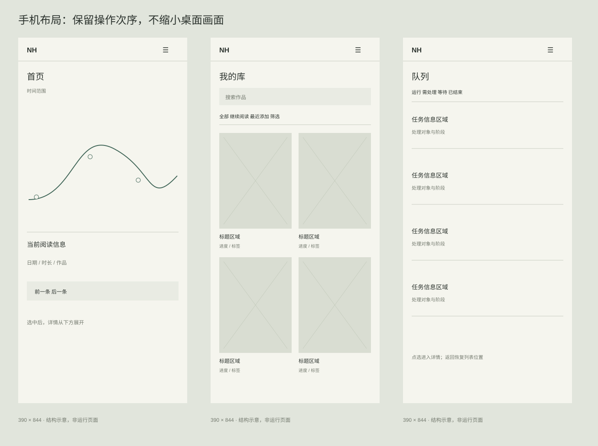
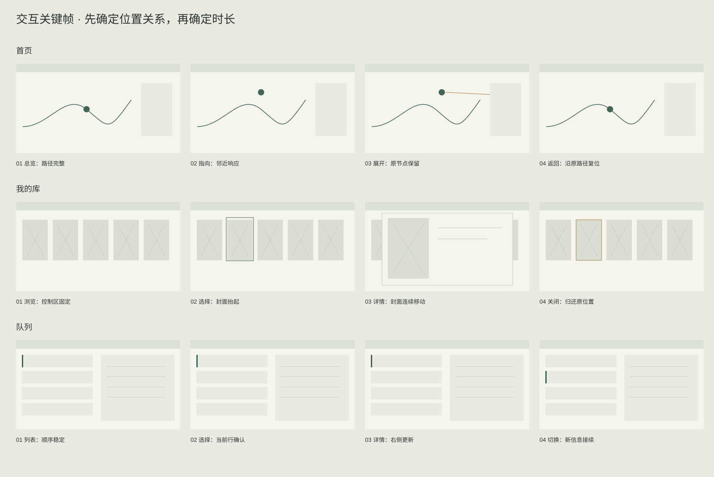

本页是设计材料，不是网站实现。几何块只标示内容区域；不使用假作品、假任务或虚构统计。先检查主次、比例和交互关系，尚未定稿的材质与场景细节不以效果图代替。
场景占据主要视野，侧面保留固定的信息锚点。探索不依靠大封面，也不再把统计拆成多张卡。
这是待推敲的构图方向。仅画出路径关系，还不能证明最终视觉与动效已经成立；下一轮需完善节点材质、空间深度和少数据状态。

上层只放真实在读作品，形成可选择的近景；下层为稳定的作品矩阵。区别来自封面之间的层次、节奏与展开关系，不依靠新增统计卡或大标题。
续读右侧以内容标签为第一信息层，保留两行标签和展开全部入口；标题缩为低对比度的次级信息，阅读进度独立放在底部。手机续读区只保留封面与轻量进度，不设置独立标签或标题详情块，把空间留给作品列表。无标签时明确显示缺失，不编造补齐。

沿用已认可的来源浮层。示意图中的路径只说明运动来源，不进入实际页面。


桌面列表与详情同时可见，省掉四张状态大空卡。列表顺序、搜索和操作区域不会随点选改变。
本图四行只是排版区域。实际任务为零就显示紧凑空状态；任务操作必须根据真实状态出现。

手机不是缩小桌面：库保留两列，队列按列表→详情，首页将上下文信息放在场景下面。
需要继续验证短屏与软键盘状态；本页是布局草图，未连接业务。

每行从左到右：初始→反馈→展开→反向。用户可以在途中反向，界面不等待动画排队。
这里只说明关键帧之间的关系，不能当作已经完成动画。实际运动的速度、遮挡和结束时机需在后续独立动效样机中评审。
